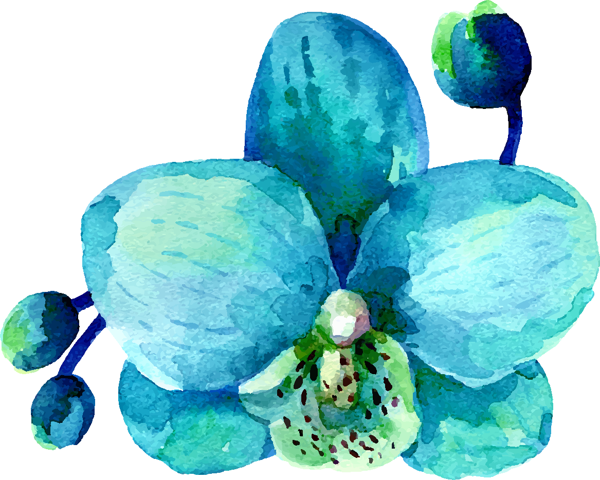

טיפול פרטני
בטיפול הפרטני אני מביאה גישה אינטגרטיבית ומשלבת חשיבה דינאמית עם CBT, מיינדפולנס ו-EMDR.
חשיבה דינאמית
CBT
מיינדפולנס
EMDR
נעים להכיר
„וּפְשׁוּטִים הַדְּבָרִים, וְחַיִּים,
וּמֻתָּר בָּם לִנְגֹּעַ, וּמֻתָּר לֶאֱהֹב.”
מאת לאה גולדברג

קצת עליי
הגעתי לטיפול באנשים ובמערכות יחסים לאחר דרך ארוכה ומפותלת בין יבשות, לימודים בתחומים מגוונים ועיסוקים בתחום הפסיכולוגיה הארגונית, משאבי אנוש ותפקידי מחקר וניהול במגזר הציבורי. לא נולדתי מטפלת, אבל בתוך תוכי תמיד היה קול ששואל שאלות ומבקש להבין ולמצוא פשר וקשר בחוויות חיים והתמודדויות. את התשובה לשאלה "מה ארצה להיות כשאהיה גדולה" מצאתי לאחר מסע של חיים שלמים.
טיפול באנשים, בזוגות ומשפחות מאפשר לי להביא לידי ביטוי את מגוון היכולות, הידע והניסיון שצברתי במהלך כל חיי, הן במסגרות מקצועיות, הן באקדמיה ובעיקר בחיים - כאישה, אמא, בת זוג, פמיניסטית, עצמאית, יהודיה, צברית, דור שני לשורדי שואה.
לטיפול אני מביאה מנעד רחב של ידע תיאורטי ומעשי ותובנות שצברתי בחיי. אני שמה דגש על הבנת המטופל מזוית ראייתו ומכבדת את דעותיו, ואת הרקע האישי, המשפחתי והתרבותי שממנו הגיע. אני מאמינה שתהליך טיפולי צריך להיות קשוב לצרכים של המטופל, לדברים שמאיימים עליו ולאלה שמרגיעים אותו, למקומות בהם הוא רגיש לביקורת, ולצורך שלו בפרטיות ודיסקרטיות. אני משקיעה ביצירת תקשורת מיטיבה וקרובה שמאפשרת חוויה של הכלה והחזקה ללא שיפוט, בגובה העיניים ועם אפשרות לפידבק הדדי.
אדם שבוחר להגיע לטיפול רוצה להרגיש שמתעניינים בו, שרואים את כאביו, שמכבדים אותו, שקשובים לצרכיו ומשאלותיו. כאשר כל אלו מתקיימים במרחב מוגן - הרי שנסללת הדרך לכל תהליך טיפולי באשר הוא, לגעת ולחלחל.
הגישה הטיפולית
בטיפול הפרטני אני מביאה גישה אינטגרטיבית ומשלבת חשיבה דינאמית עם CBT, מיינדפולנס ו-EMDR.
בטיפול זוגי ומשפחתי אני ממוקדת ביצירת שינוי ונשענת על חשיבה אסטרטגית - מערכתית, הומניסטית והוליסטית.
הקליניקה
המפגשים בקליניקה מיועדים לתהליך אישי, זוגי ומשפחתי מעמיק, לחקירה כנה בהסכמה לראות את החיווטים הפנימיים שלנו, כך שנוכל להתחיל להשתחרר מהם, ולפנות מקום למי שאנחנו רוצים להיות. יש כוונה מאחורי העבודה שנעשה, והיא מחייבת לקיחת אחריות על הדרך.
במילים אחרות אני פותחת מרחב למיטיבי לכת אשר רוצים לדעת למה, כמה ואיך, ומוכנים לעשות בתוך הרצון הזה דרך משמעותית.
אני מחויבת להחזקת המסע הזה בעיניים טובות, להיות תומכת ולהביא את מגוון הידע, הכלים והיכולות שלי לטובת התהליך הטיפולי.
מכתבי תודה
הודעה ממטופלת תופסת אותי בין משימה למשימה. אני מחייכת לעצמי, מוקירה תודה על האפשרות לגעת בלבבות ולאפשר שינוי אמיתי. כמה זה לא מובן מאליו ובכל פעם מרגש אותי מחדש.
לפני מס' שבועות סיימנו מסע ארוך ומשמעותי: מסע, אישי, זוגי, משפחתי אבל בעיקר ריגשי. נכנסנו לתהליך מתוך צורך אמיתי, נחוץ ומתבקש להעניק לבנות שלנו את הטוב ביותר.
„ודע שהעולם גשר צר והעיקר שלא לפחד”תמיד תפסתי את מילותיו של רבי נחמן כמתארות חוויה קיומית קשה ומורכב. חוויה שבה כמו גשר צר המאויים בתהום ארוכה מכל צדדיו, כך גם העולם לעיתים נדמה כדוחק אותנו למדרון תלול.
הגעתי אליך מבולבלת, מוצפת, מתוסכלת ולא הצלחתי להביא את עצמי, להסביר מה עובר עליי… ואת, בעדינות ובגמישות, עם הרבה אמפטיה והכלה, הצלחת לגעת בי. לפעמים הרגשתי שאת ממש כואבת את כאבי…
הימים עברו וסערת הרגשות חלפה, אני הרבה יותר רגועה ומאוזנת. עברנו דרך ארוכה יחד ואני מחוייבת להמשך, מבינה שיש עוד תהליך ארוך לפניי.
תודה שבחרתם לעשות את המסע שלכם איתי -
אנא קיראו את החוזה הטיפולי ומלאו את השאלון
לינק לשאלון →מלאו את הפרטים שלכם ואחזור אליכם